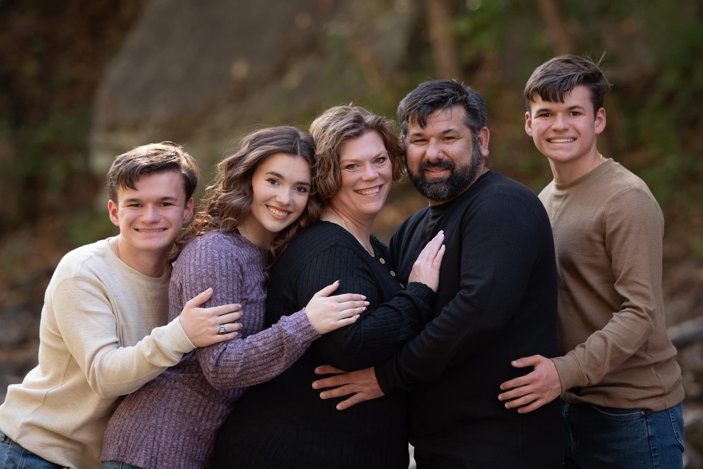
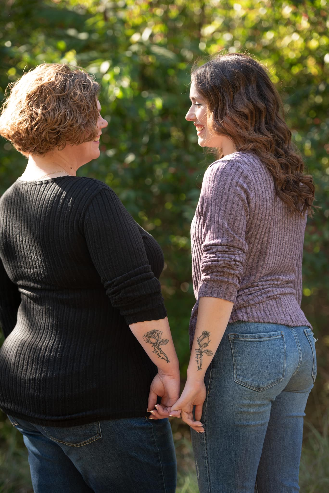
My mom is by best friend. She has been there for me since day one. If I ever need anything she is who I go to. Yes, that is a coordinating tattoo it took a year of convincing but we both love it so much. (We also both have nose piercings we got the same day together!)
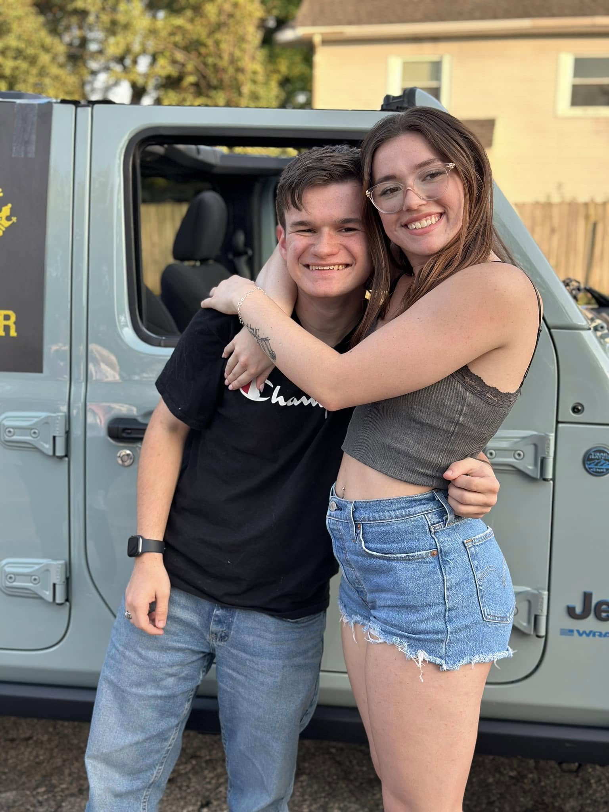
This is Shawn. He is one of my brothers. He plays tennis at Belton High School. He is two and a half years younger than me. He is the twin of my other brother. He means the world to me and I love him so much.
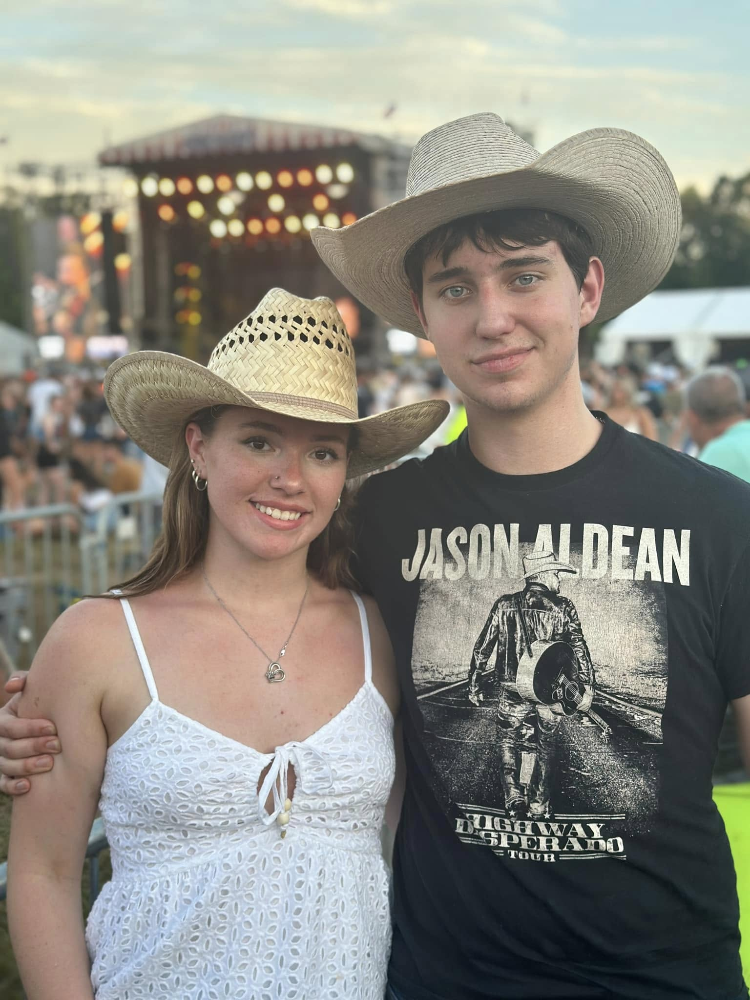
Brandon is my boyfriend. We live together now and in my world that means we're family just as much as my blood family. We have a dog and a cat together He is the hardest working person I know and I look up to him because of that. He pushes me every day to be the best version of me I can be and I am so grateful for that.
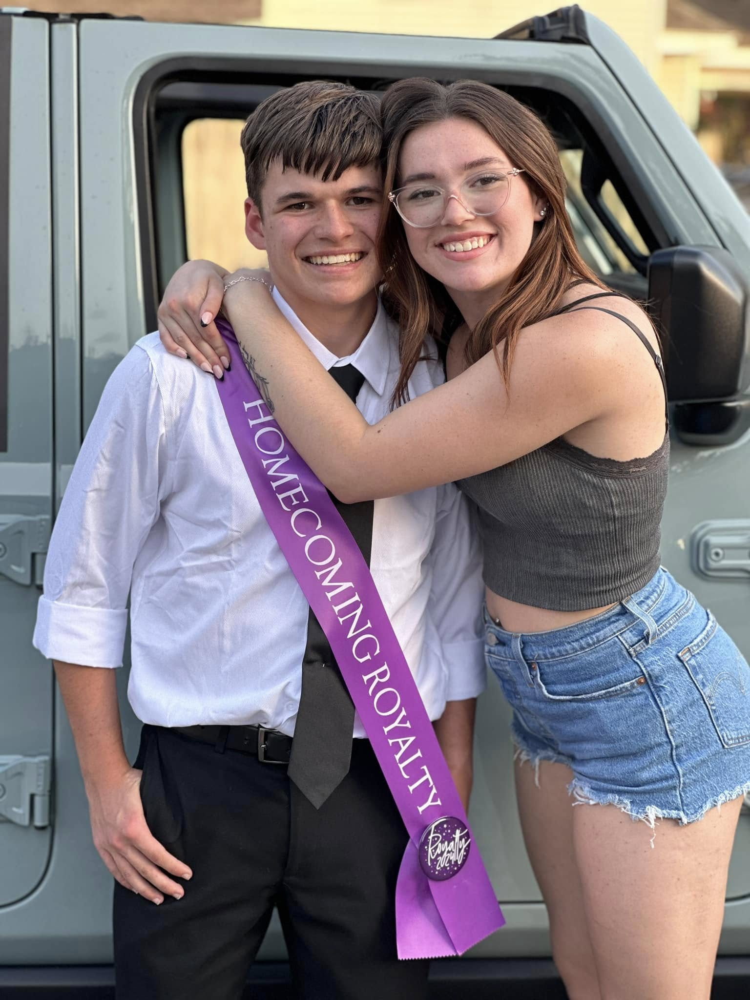
This is my other brother James. He is a section leader in the Belton High School Marching and Symphonic Band. He is the twin to Shawn meaning I am also two and a half years older than him as well. He means the world to me and I love him so much.
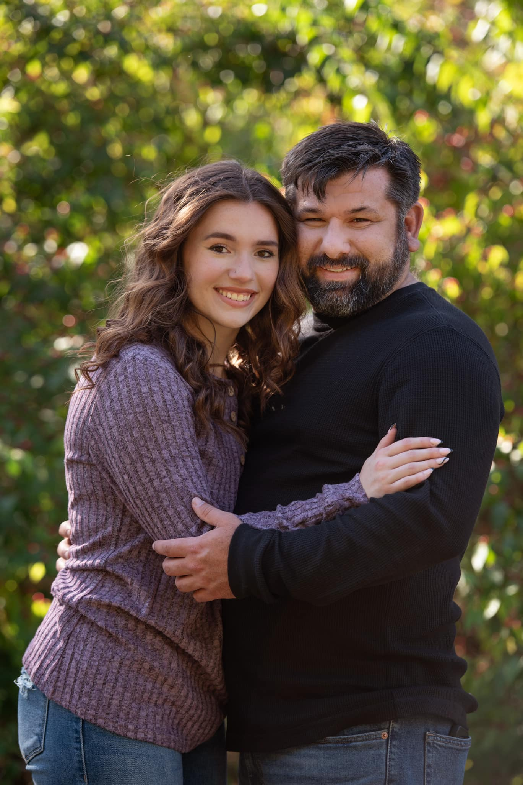
I have no bigger a support person in my life than my dad. He has helped me get tricks for dance and has never missed an important performance. He taught me how to work around the house and change just about anything on a car. I am so lucky to call him my dad. Without him I don't know where I would be in life.
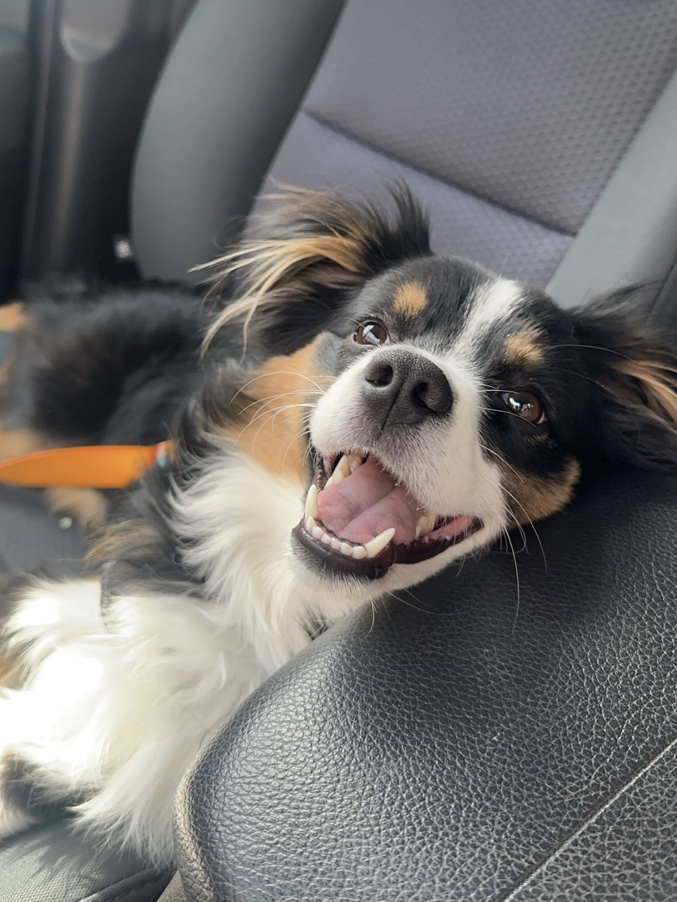
Lexi is Brandon and my dog. She is a few months older than a year now. She truly is the sweetest dog I have ever met. She is a mini Australian Shepherd. She loves her sister Charlotte more than anybody else even if she does put her head in her mouth when she's playing.
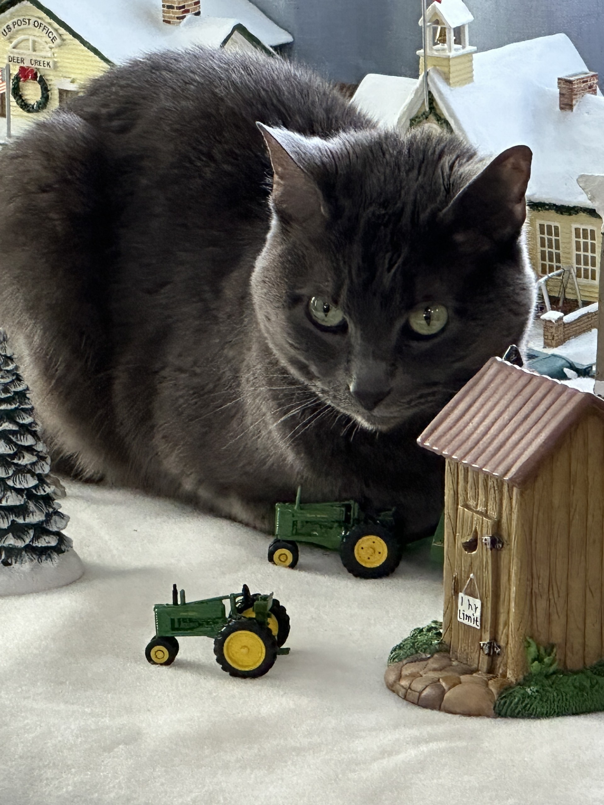
Luna is my mom's cat. She is the cat I begged for months to get. She had to be grey, a baby, and a girl. Younger me was so excited when mom finally caved. Luna is now 8 years old. She loves cuddles and we call her toothless (from how to train your dragon).
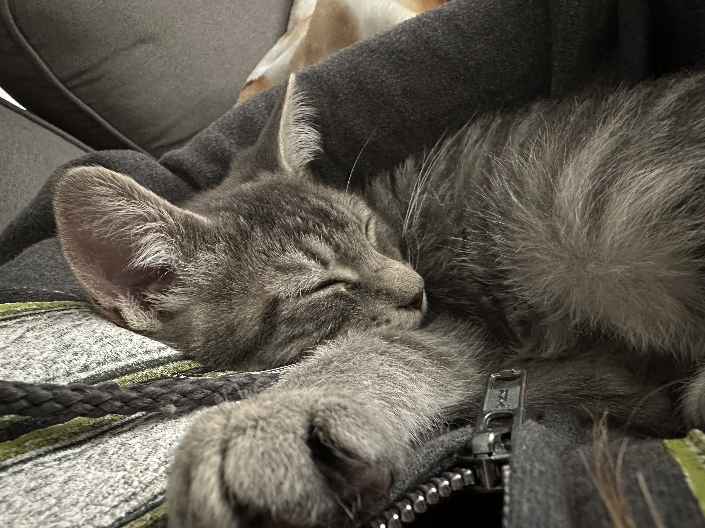
Charlotte is Brandon and my kitten. We got her this last summer on a whim. We were originally going to get stuff for lexi's birthday and brought her home a sister instead. We have decided Charlotte is now in her tennage years because everything must be hers and she does whatever she wants.
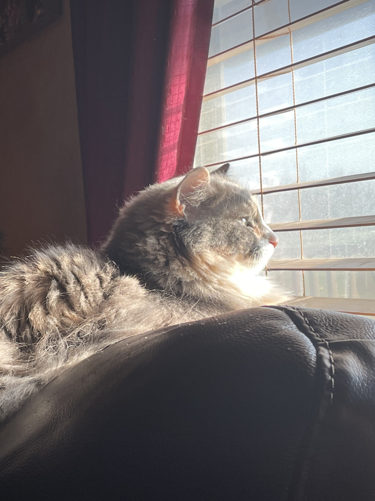
Selene is my mom's other cat. She wants attention 24/7. She is a relatively quiet cat but will always get vocal for food. She is a bigger cat and very fluffy. She is sweet but don't let her fool you she will steal your boyfriend as fast as she can.
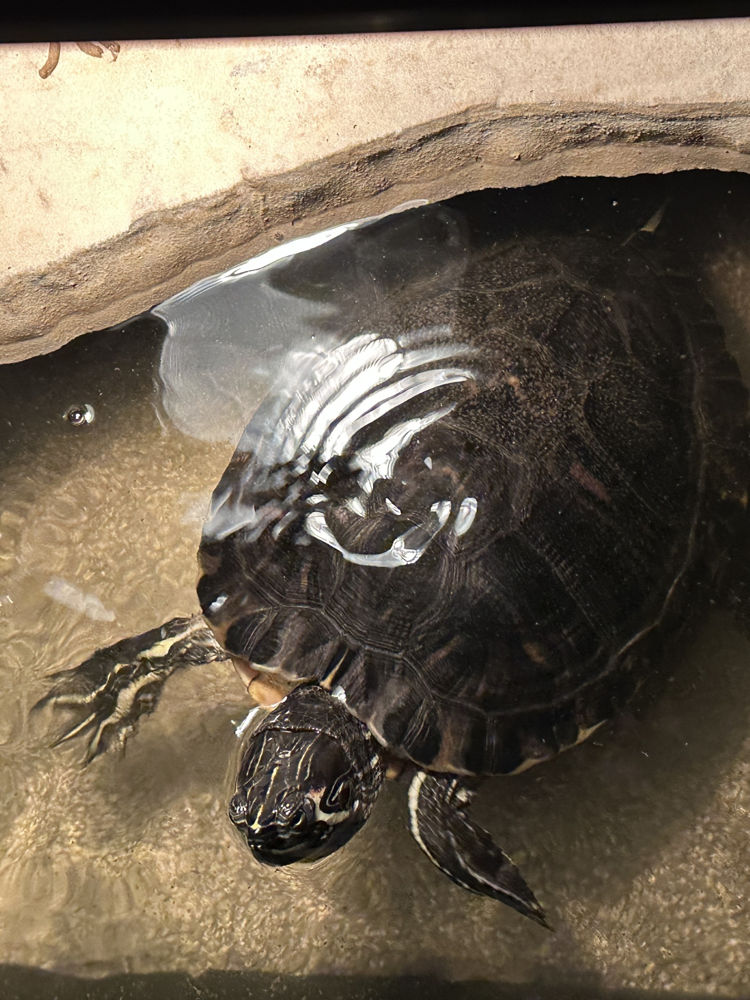
Bixi is my turtle. He believe it or not has a huge personality. He will hiss at you like a cat if you get too close to him and will splash water as loud at turtly possible to get his food. He is a yellow-bellied turtle and I have had him for about 4 years.